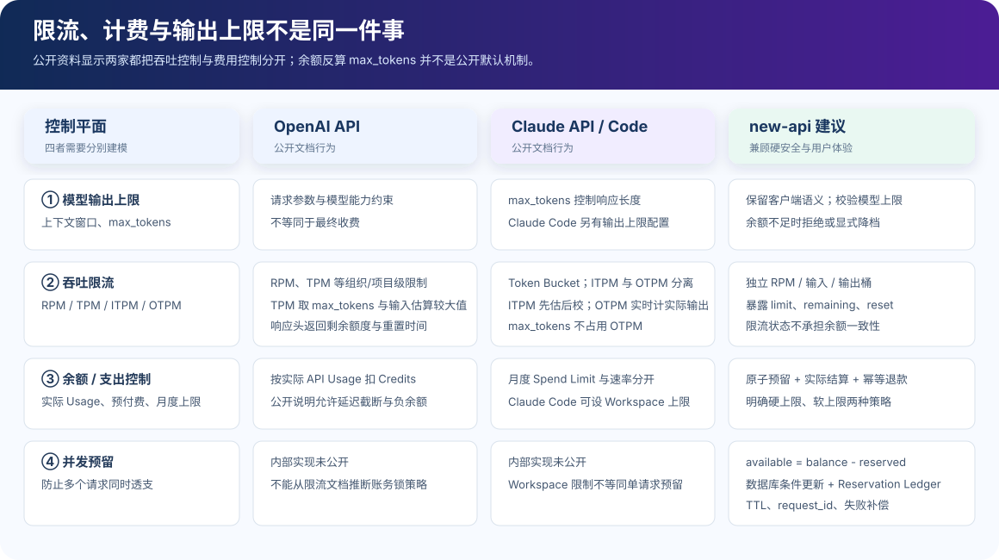

OpenAI 与 Claude Code：Token 限流和计费机制调研
研究结论：两家公开机制都把“模型输出上限、吞吐限流、费用控制”分开处理。公开资料没有显示它们默认按余额反算并静默改写 max_tokens；OpenAI 的 max_tokens 参与 TPM 估算，Claude 的 OTPM 则只按实时输出计数。
先说边界：Claude API 不等于 Claude Code
Claude API 是模型服务接口；Claude Code 是运行在终端、IDE 或云端的 Agent 产品。Claude Code 可以使用 Claude 订阅、Anthropic Console API 预付费账号，也可以接入 Amazon Bedrock、Google Cloud 或 Microsoft Foundry。使用 API 认证时，Claude Code 的底层请求仍受组织和 Workspace 的 Claude API 计费、速率与支出限制。
本文回答的是此前讨论的核心问题：输入/输出 Token 如何限流和计费、max_tokens 是否按余额变化、并发是否会导致余额击穿。它不是 OpenAI 与 Claude Code 的通用功能评测。
一张图看懂四个控制平面

最容易产生误解的是：TPM/OTPM 是服务容量控制，不是余额锁；max_tokens 是请求输出边界，也不是最终账单。
结论对比
| 问题 | OpenAI API | Claude API / Claude Code | 对 new-api 的启示 |
|---|---|---|---|
| 输入与输出是否分别收费 | 模型价格通常区分 input、cached input、output；最终按实际 Usage 计费。 | API Token 消耗区分 input、output、cache read/write；Claude Code API 模式按 Token 消耗计费。 | 结算必须基于最终 Usage 与各倍率，不能把限流计数直接当账单。 |
max_tokens 是否参与限流 | 官方指南称 TPM 计算取 max_tokens 与根据请求字符数估算 Token 的较大值，因此建议设置为接近期望输出。 | OTPM 实时按实际生成 Token 计数；官方明确说明 max_tokens 不参与 OTPM。 | 两种限流模型都合理，但必须明确语义，不能混用。 |
| 输出限流发生在何时 | 公开指南侧重请求进入时的 TPM 预算与响应头；内部逐 Token 调度没有公开。 | OTPM 在输出生成过程中实时评估，只计算实际输出。 | 若采用流式输出桶，应在扫描流时计量，而非等响应结束。 |
| 余额耗尽如何处理 | 预付余额耗尽后请求开始返回 billing quota 错误；官方也承认截断可能延迟并出现负余额。 | 组织月度 Spend Limit 达到后暂停；Claude Code 预付 Credit 不足会报错，订阅方案则按会话/周等使用窗口限制。 | “永不负数”是比公开云平台更严格的目标，需要原子预留账本。 |
是否按余额反算 max_tokens | 公开资料未描述这种默认行为。 | 公开资料未描述这种默认行为；Claude Code 的输出上限配置主要约束响应和思考预算。 | 不应静默改写。可提供显式 auto_clamp 模式，并返回生效值。 |
| 并发隔离 | Rate Limit 在组织/项目层，不是终端用户层；单用户限制应由应用自行实现。 | API 限制在组织层，可为 Workspace 设置更低限制；Claude Code 团队建议按总体并发规划。 | 需要用户、Token、渠道、组织多层桶，以及余额 Reservation。 |
OpenAI：max_tokens 更像吞吐预占，不是金额预扣
公开限流模型
OpenAI API 公布 RPM、RPD、TPM、TPD、IPM 等指标，限制在组织和项目层生效，并按模型或共享模型族统计。响应头返回请求和 Token 的 limit、remaining、reset 等信息。
TPM admission estimate = max(request.max_tokens, estimated_tokens_from_request_characters)
这解释了为什么把 max_tokens 填得非常大会降低并发吞吐：即使模型没有真的生成那么多 Token，入口侧的速率预算仍可能按较大值计算。官方建议把它设置得接近期望响应长度。
公开计费模型
预付 Credits 根据实际 API Usage 扣减；余额到零后请求会逐步返回 billing quota 错误。值得注意的是，OpenAI 官方帮助文档明确写出：由于计费和切断存在延迟，超额使用可能显示为负余额，并从下一次充值中扣除。
因此，不能用“OpenAI 会在请求前按 max_tokens 完整锁住费用”来解释其公开行为。公开资料支持的是 TPM 估算与实际 Usage 计费两条不同链路。
Claude：输入先估后校，输出实时计数
Claude API 的 ITPM / OTPM
Claude Messages API 将 Token 吞吐拆成 ITPM 和 OTPM，并使用 Token Bucket。ITPM 在请求开始时估算，随后按实际输入调整；对大多数模型，cache read 不计入 ITPM，input 与 cache creation 会计入。
ITPM: estimate at request start → reconcile to actual input OTPM: count actual output tokens while they are produced max_tokens: does not reserve OTPM
这是一种更贴近实时使用量的输出限流方式。高 max_tokens 不会单独压低 OTPM 可用量，但实际输出越多，实时消耗的 OTPM 越多。
Claude Code 的产品层控制
- API 认证：按 API Token 消耗计费，
/usage在本地依据 Token 和标准目录价估算；Console 才是权威账单。 - 订阅认证：显示会话、周、模型专项等使用窗口；它不是用户钱包的逐请求余额。
- 组织治理：首次 Console 登录会建立 Claude Code Workspace，可配置 Workspace spend/rate limit，避免开发工具挤占生产工作负载。
- 上下文治理：自动压缩、Prompt Cache、清理无关会话、选择更便宜模型，从源头降低输入 Token。
- 并发治理：官方排障建议减少并行子 Agent 或工具并发；团队限额按组织总体并发规划，而不是平均值硬切到每个人。
--max-turns 或 Agent 轮次限制控制的是 Agent 循环次数；CLAUDE_CODE_MAX_OUTPUT_TOKENS 控制单次模型输出边界。两者都不等同于“剩余余额可购买的 Token 数”。
它们是否会根据余额自动设置 max_tokens？
根据公开资料，不能得出会这样做的结论。 OpenAI 文档将 max_tokens 用于输出边界和 TPM 估算，将 Credits 用于实际 Usage 结算；Claude 文档将 max_tokens 用于输出边界，而 OTPM 只计实际生成。两者都用独立的余额、Spend Limit 或订阅使用窗口控制费用。
这是基于公开文档的工程推断，不是对两家公司内部实现的断言。它们的分布式账务锁、预留、延迟聚合和风控策略没有完整公开。
默认静默截断的问题
相同请求在余额变化时得到不同的输出上限；Agent 可能在工具调用或结构化 JSON 中途被截断；并发请求还会争抢同一余额，导致每个请求的“可负担上限”瞬时变化。
更可预测的接口
保留客户端传入值。若不足，返回结构化错误和 affordable_max_output_tokens；只有客户端显式启用自动降档时，网关才改写，并通过响应头返回最终生效值。
对 new-api 的推荐方案
推荐：四层分离
- 模型层：验证上下文窗口与模型最大输出，不涉及余额。
- 吞吐层：分别维护 RPM、输入 Token、输出 Token 桶；响应暴露 limit、remaining、reset。
- 资金层：按预计最坏或配置的风险预算原子预留，按最终 Usage 结算差额。
- 并发层：使用 Reservation Ledger，让
available = balance - active_reserved；Reservation 包含 request_id、TTL、状态和幂等键。
余额反算的安全公式
available_quota = balance - active_reserved - input_estimated_cost - fixed_cost
affordable_output_tokens =
floor(available_quota /
(ModelRatio × GroupRatio × CompletionRatio × QuotaPerUnit))
effective_max =
min(client_max, model_max, policy_max, affordable_output_tokens)
公式只能提供“理论可负担上限”。图片、音频、工具调用、缓存写入、Tiered Expression、汇率与渠道附加倍率必须单独纳入；无法在入口确定的费用需要安全边际。
三种产品策略
| 策略 | 行为 | 体验 | 适用场景 |
|---|---|---|---|
| strict reject | 客户端上限超出可负担范围即 402/403，返回建议上限 | 最可预测，不会静默改变语义 | API、结构化输出、Agent 工具调用 |
| explicit auto-clamp | 仅在请求显式开启时改写，响应头返回原值和生效值 | 连续性好，但可能截断 | 交互式聊天、消费者产品 |
| soft credit | 允许小额负余额或信用额度，事后结算 | 最好，但平台承担损失风险 | 可信客户、后付费企业 |
结合 OpenAI 与 Claude 的公开做法，默认更推荐“显式限额 + 实际 Usage 结算 + 独立速率桶”；若 new-api 必须保证永不负数，再增加原子 Reservation，而不是只靠动态修改 max_tokens。
与当前 new-api 代码的差异
| 当前代码事实 | 风险或差异 | 建议落点 |
|---|---|---|
普通倍率预扣使用 prompt 与请求 maxTokens | 输出预扣未应用 CompletionRatio，与最终计费公式不完全一致 | relay/helper/price.go:ModelPriceHelper |
| 结算使用实际 prompt/completion/cache 等 Usage | 实际费用高于预扣时会补扣 | service/text_quota.go、service/billing_session.go |
| 钱包和 Token 是算术扣减 | 缺少余额条件的原子更新，并发请求可能一起通过检查 | model/user.go:DecreaseUserQuota、model/token.go:DecreaseTokenQuota |
| Token 限流按请求阶段做模型请求频率控制 | 不是输出流中的 OTPM，也不是资金 Reservation | middleware/model_rate_limit.go 与流扫描器分层 |
完整代码风险链路见《余额击穿风险与计费一致性》；Token 限流语义见《Token 限流是请求限流还是响应限流》。
公开来源与证据等级
| 来源 | 支持的结论 | 等级 |
|---|---|---|
| OpenAI API Rate limits | RPM/TPM、组织/项目层、响应头、max_tokens 参与 TPM 估算 | 官方开发文档 |
| OpenAI Prepaid Billing | Credits 按 API Usage 扣减、自动充值、余额到零后的暂停 | 官方帮助中心 |
| OpenAI 预付费设置与延迟计费 | 余额耗尽错误、延迟切断、可能出现负余额 | 官方帮助中心 |
| Claude API Rate limits | Token Bucket、ITPM/OTPM、输入估算校正、OTPM 实时计数、Workspace 限制 | 官方平台文档 |
| Claude Code Manage costs | API Token 计费、/usage 本地估算、Workspace、订阅窗口、成本优化 | 官方产品文档 |
| Claude Code Error reference | 余额不足、429、并发建议、输出与 Thinking Budget 的关系 | 官方产品文档 |
| Claude Code Quickstart | 订阅、Console API、云厂商认证方式 | 官方产品文档 |
研究方法：只采用 OpenAI、Anthropic/Claude 官方公开资料；“未公开”表示在上述公开资料中没有找到，不代表内部一定不存在。云服务规则会变化，应以部署时的官方文档和控制台为准。
自检问题
- 能否区分
max_tokens、TPM/OTPM、实际 Usage 和余额？ - 能否解释为什么 OpenAI 建议降低
max_tokens，而 Claude 称提高它没有 OTPM 代价？ - 能否说明 Claude Code 订阅使用窗口与 API 预付 Credits 的区别？
- 若要求余额永不为负，是否同时设计了原子预留、最终结算和幂等退款？
- 自动降低输出上限时，客户端是否显式选择，并能看到最终生效值？